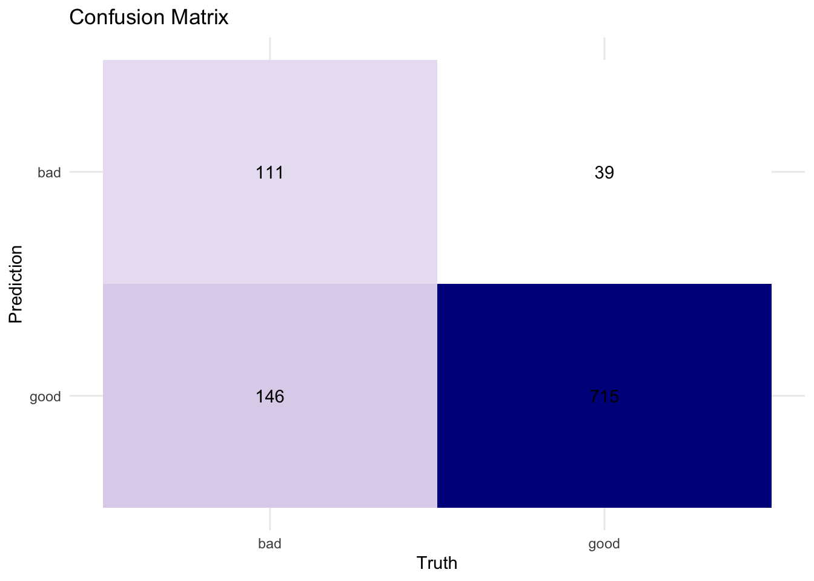

library(tidymodels)
library(tidyverse)
library(modeldata)
library(vip)
library(probably)
library(discrim)
library(corrplot)
library(patchwork)
# For reproducibility
set.seed(123)
theme_set(theme_minimal())
# Load datasets
data(credit_data) # Credit default dataset
data(cells) # Cell segmentation datasetChapter 14: Classification Models - Theory and Implementation
Learning Objectives
By the end of this chapter, you will understand:
- Classification theory and concepts
- Binary vs multiclass classification
- Logistic regression mathematics
- Decision trees and random forests theory
- Support vector machines (SVM) concepts
- Evaluation metrics for classification
- Class imbalance handling
- Practical implementation with tidymodels
Download R Script
You can download the complete R code for this chapter: üì• Download 14-classification.R
Classification Theory
What is Classification?
Classification is a supervised learning task where we predict discrete class labels. Unlike regression (continuous outputs), classification assigns observations to categories.
Mathematical Framework:
Given features \(X = (x_1, x_2, ..., x_p)\) and classes \(Y \in \{C_1, C_2, ..., C_k\}\), we seek:
\[P(Y = C_k | X)\]
The predicted class is: \[\hat{y} = \arg\max_{k} P(Y = C_k | X)\]
Setup
Logistic Regression Theory
Binary Classification
For binary classification with classes 0 and 1, logistic regression models:
\[P(Y = 1 | X) = \frac{1}{1 + e^{-(\beta_0 + \beta_1x_1 + ... + \beta_px_p)}}\]
This is the logistic (sigmoid) function:
# Visualize sigmoid function
x <- seq(-10, 10, 0.1)
sigmoid <- function(x) 1 / (1 + exp(-x))
sigmoid_plot <- tibble(
x = x,
probability = sigmoid(x)
) %>%
ggplot(aes(x = x, y = probability)) +
geom_line(linewidth = 1.5, color = "darkblue") +
geom_hline(yintercept = 0.5, linetype = "dashed", color = "red") +
geom_vline(xintercept = 0, linetype = "dashed", alpha = 0.5) +
labs(
title = "Logistic (Sigmoid) Function",
subtitle = "Maps linear combinations to probabilities [0,1]",
x = "Linear Combination (β₀ + β₁x₁ + ... + βₚxₚ)",
y = "P(Y = 1)"
) +
annotate("text", x = 5, y = 0.25, label = "Class 0 likely", size = 5, color = "blue") +
annotate("text", x = 5, y = 0.75, label = "Class 1 likely", size = 5, color = "blue")
# Decision boundary illustration
set.seed(123)
binary_data <- tibble(
x1 = c(rnorm(50, -1, 1), rnorm(50, 1, 1)),
x2 = c(rnorm(50, -1, 1), rnorm(50, 1, 1)),
class = factor(rep(c("A", "B"), each = 50))
)
boundary_plot <- ggplot(binary_data, aes(x = x1, y = x2, color = class)) +
geom_point(size = 3, alpha = 0.7) +
stat_smooth(method = "glm", method.args = list(family = "binomial"),
se = FALSE, color = "black", linewidth = 1) +
scale_color_manual(values = c("A" = "red", "B" = "blue")) +
labs(
title = "Logistic Regression Decision Boundary",
subtitle = "Linear boundary in feature space",
x = "Feature 1",
y = "Feature 2"
)
sigmoid_plot + boundary_plot
Odds and Log-Odds
The odds of an event: \[\text{Odds} = \frac{P(Y = 1)}{P(Y = 0)} = \frac{p}{1-p}\]
The log-odds (logit): \[\text{logit}(p) = \log\left(\frac{p}{1-p}\right) = \beta_0 + \beta_1x_1 + ... + \beta_px_p\]
Maximum Likelihood Estimation
Parameters are estimated by maximizing the likelihood:
\[L(\beta) = \prod_{i=1}^{n} p_i^{y_i}(1-p_i)^{1-y_i}\]
Where \(p_i = P(Y_i = 1 | X_i)\)
Implementing Logistic Regression
# Prepare credit data
credit_clean <- credit_data %>%
drop_na() %>%
mutate(Status = factor(Status))
# Split data
credit_split <- initial_split(credit_clean, prop = 0.75, strata = Status)
credit_train <- training(credit_split)
credit_test <- testing(credit_split)
# Create recipe
credit_recipe <- recipe(Status ~ ., data = credit_train) %>%
step_normalize(all_numeric_predictors()) %>%
step_dummy(all_nominal_predictors())
# Logistic regression specification
logistic_spec <- logistic_reg() %>%
set_engine("glm") %>%
set_mode("classification")
# Workflow
logistic_wf <- workflow() %>%
add_recipe(credit_recipe) %>%
add_model(logistic_spec)
# Fit model
logistic_fit <- logistic_wf %>%
fit(credit_train)
# Extract coefficients
logistic_coefs <- logistic_fit %>%
extract_fit_parsnip() %>%
tidy() %>%
filter(term != "(Intercept)") %>%
arrange(desc(abs(estimate)))
# Visualize coefficients
ggplot(logistic_coefs %>% head(10),
aes(x = reorder(term, estimate), y = estimate)) +
geom_col(fill = "steelblue") +
coord_flip() +
labs(
title = "Logistic Regression Coefficients",
subtitle = "Top 10 most influential features",
x = "Feature",
y = "Coefficient (log-odds)"
)
Decision Trees Theory
How Decision Trees Work
Decision trees recursively partition the feature space using binary splits.
Splitting Criteria:
For classification, common criteria include:
Gini Impurity: \[G = \sum_{k=1}^{K} p_k(1 - p_k)\]
Entropy (Information Gain): \[H = -\sum_{k=1}^{K} p_k \log_2(p_k)\]
Where \(p_k\) is the proportion of samples in class \(k\).
# Visualize decision tree concepts
# Create sample data for visualization
tree_data <- tibble(
x1 = runif(200, 0, 10),
x2 = runif(200, 0, 10),
class = factor(case_when(
x1 < 3 & x2 < 5 ~ "A",
x1 < 3 & x2 >= 5 ~ "B",
x1 >= 3 & x1 < 7 ~ "C",
TRUE ~ "D"
))
)
# Decision tree boundaries
tree_boundary_plot <- ggplot(tree_data, aes(x = x1, y = x2, color = class)) +
geom_point(size = 2, alpha = 0.6) +
geom_vline(xintercept = c(3, 7), linetype = "dashed", linewidth = 1) +
geom_hline(yintercept = 5, linetype = "dashed", linewidth = 1) +
scale_color_viridis_d() +
labs(
title = "Decision Tree Partitioning",
subtitle = "Recursive binary splits create rectangular regions",
x = "Feature 1",
y = "Feature 2"
) +
annotate("text", x = 1.5, y = 2.5, label = "Region A", size = 4) +
annotate("text", x = 1.5, y = 7.5, label = "Region B", size = 4) +
annotate("text", x = 5, y = 5, label = "Region C", size = 4) +
annotate("text", x = 8.5, y = 5, label = "Region D", size = 4)
# Gini vs Entropy
p_range <- seq(0.01, 0.99, 0.01)
impurity_data <- tibble(
p = p_range,
Gini = 2 * p * (1 - p),
Entropy = -p * log2(p) - (1 - p) * log2(1 - p)
) %>%
pivot_longer(cols = c(Gini, Entropy), names_to = "Measure", values_to = "Impurity")
impurity_plot <- ggplot(impurity_data, aes(x = p, y = Impurity, color = Measure)) +
geom_line(linewidth = 1.5) +
scale_color_manual(values = c("Gini" = "blue", "Entropy" = "red")) +
labs(
title = "Impurity Measures for Binary Classification",
subtitle = "Both measures peak at p = 0.5 (maximum uncertainty)",
x = "Proportion of Class 1",
y = "Impurity"
)
tree_boundary_plot + impurity_plot
Implementing Decision Trees
# Decision tree specification
tree_spec <- decision_tree(
cost_complexity = 0.01,
tree_depth = 10,
min_n = 20
) %>%
set_engine("rpart") %>%
set_mode("classification")
# Workflow
tree_wf <- workflow() %>%
add_recipe(credit_recipe) %>%
add_model(tree_spec)
# Fit model
tree_fit <- tree_wf %>%
fit(credit_train)
# Visualize tree (if rpart.plot is available)
if (require(rpart.plot, quietly = TRUE)) {
tree_fit %>%
extract_fit_engine() %>%
rpart.plot(roundint = FALSE, type = 4, extra = 101)
}
# Feature importance
tree_imp <- tree_fit %>%
extract_fit_parsnip() %>%
vip(num_features = 10)
tree_imp + labs(title = "Decision Tree Feature Importance")
Random Forests Theory
Ensemble Learning
Random Forests combine multiple decision trees through:
- Bootstrap Aggregating (Bagging): Train each tree on a bootstrap sample
- Feature Randomness: Consider random subset of features at each split
- Voting: Aggregate predictions (majority vote for classification)
Why it works: - Reduces overfitting through averaging - Decorrelates trees through randomness - Maintains low bias while reducing variance
# Random Forest implementation
rf_spec <- rand_forest(
trees = 500,
mtry = 3,
min_n = 10
) %>%
set_engine("ranger", importance = "impurity") %>%
set_mode("classification")
rf_wf <- workflow() %>%
add_recipe(credit_recipe) %>%
add_model(rf_spec)
# Fit with cross-validation
set.seed(123)
credit_folds <- vfold_cv(credit_train, v = 5, strata = Status)
rf_cv <- rf_wf %>%
fit_resamples(
resamples = credit_folds,
metrics = metric_set(roc_auc, accuracy, precision, recall),
control = control_resamples(save_pred = TRUE)
)
# Performance metrics
collect_metrics(rf_cv) %>%
knitr::kable(digits = 3)| .metric | .estimator | mean | n | std_err | .config |
|---|---|---|---|---|---|
| accuracy | binary | 0.796 | 5 | 0.004 | pre0_mod0_post0 |
| precision | binary | 0.693 | 5 | 0.018 | pre0_mod0_post0 |
| recall | binary | 0.354 | 5 | 0.019 | pre0_mod0_post0 |
| roc_auc | binary | 0.824 | 5 | 0.009 | pre0_mod0_post0 |
# ROC curve
rf_roc <- rf_cv %>%
collect_predictions() %>%
roc_curve(Status, .pred_bad)
autoplot(rf_roc) +
labs(title = "Random Forest ROC Curve",
subtitle = "5-fold cross-validation results")
Support Vector Machines Theory
Maximum Margin Classifier
SVMs find the hyperplane that maximizes the margin between classes.
Linear SVM Optimization: \[\min_{w,b} \frac{1}{2}||w||^2\] Subject to: \(y_i(w^Tx_i + b) \geq 1\) for all \(i\)
The Kernel Trick
For non-linear boundaries, SVMs use kernel functions to map data to higher dimensions:
Common Kernels: 1. Linear: \(K(x_i, x_j) = x_i^T x_j\) 2. Polynomial: \(K(x_i, x_j) = (x_i^T x_j + c)^d\) 3. RBF (Gaussian): \(K(x_i, x_j) = \exp(-\gamma||x_i - x_j||^2)\)
# Demonstrate SVM with different kernels
# Create non-linear data
set.seed(123)
spiral_data <- tibble(
angle = runif(200, 0, 4 * pi),
radius = runif(200, 0.5, 2),
class = factor(rep(c("A", "B"), each = 100))
) %>%
mutate(
x1 = radius * cos(angle) + ifelse(class == "A", 0, 0.5) + rnorm(200, 0, 0.2),
x2 = radius * sin(angle) + ifelse(class == "A", 0, 0.5) + rnorm(200, 0, 0.2)
)
# Linear SVM
svm_linear_spec <- svm_linear(cost = 1) %>%
set_engine("kernlab") %>%
set_mode("classification")
# RBF SVM
svm_rbf_spec <- svm_rbf(cost = 1, rbf_sigma = 0.1) %>%
set_engine("kernlab") %>%
set_mode("classification")
# Fit both models
svm_linear_fit <- svm_linear_spec %>%
fit(class ~ x1 + x2, data = spiral_data)
svm_rbf_fit <- svm_rbf_spec %>%
fit(class ~ x1 + x2, data = spiral_data)
# Create prediction grid
grid <- expand_grid(
x1 = seq(min(spiral_data$x1), max(spiral_data$x1), length.out = 100),
x2 = seq(min(spiral_data$x2), max(spiral_data$x2), length.out = 100)
)
# Get predictions
grid_linear <- grid %>%
bind_cols(predict(svm_linear_fit, grid, type = "prob"))
grid_rbf <- grid %>%
bind_cols(predict(svm_rbf_fit, grid, type = "prob"))
# Visualize
p_linear <- ggplot() +
geom_tile(data = grid_linear, aes(x = x1, y = x2, fill = .pred_A), alpha = 0.3) +
geom_point(data = spiral_data, aes(x = x1, y = x2, color = class), size = 2) +
scale_fill_gradient2(low = "blue", mid = "white", high = "red", midpoint = 0.5) +
scale_color_manual(values = c("A" = "red", "B" = "blue")) +
labs(title = "Linear SVM", subtitle = "Linear decision boundary") +
theme(legend.position = "none")
p_rbf <- ggplot() +
geom_tile(data = grid_rbf, aes(x = x1, y = x2, fill = .pred_A), alpha = 0.3) +
geom_point(data = spiral_data, aes(x = x1, y = x2, color = class), size = 2) +
scale_fill_gradient2(low = "blue", mid = "white", high = "red", midpoint = 0.5) +
scale_color_manual(values = c("A" = "red", "B" = "blue")) +
labs(title = "RBF SVM", subtitle = "Non-linear decision boundary") +
theme(legend.position = "none")
p_linear + p_rbf
Classification Metrics
Understanding Different Metrics
# Fit final model
final_rf <- rf_wf %>%
fit(credit_train)
# Get predictions
credit_pred <- final_rf %>%
predict(credit_test) %>%
bind_cols(
final_rf %>% predict(credit_test, type = "prob")
) %>%
bind_cols(credit_test %>% select(Status))
# Confusion matrix
conf_mat <- credit_pred %>%
conf_mat(truth = Status, estimate = .pred_class)
autoplot(conf_mat, type = "heatmap") +
scale_fill_gradient(low = "white", high = "darkblue") +
labs(title = "Confusion Matrix")
# Calculate various metrics
metrics_summary <- credit_pred %>%
metrics(truth = Status, estimate = .pred_class, .pred_bad) %>%
bind_rows(
credit_pred %>% roc_auc(truth = Status, .pred_bad),
credit_pred %>% pr_auc(truth = Status, .pred_bad)
)
metrics_summary %>%
knitr::kable(digits = 3)| .metric | .estimator | .estimate |
|---|---|---|
| accuracy | binary | 0.817 |
| kap | binary | 0.441 |
| mn_log_loss | binary | 0.416 |
| roc_auc | binary | 0.853 |
| roc_auc | binary | 0.853 |
| pr_auc | binary | 0.663 |
Metrics Explained
Confusion Matrix Terms: - True Positives (TP): Correctly predicted positive - True Negatives (TN): Correctly predicted negative - False Positives (FP): Type I error - False Negatives (FN): Type II error
Key Metrics:
\[\text{Accuracy} = \frac{TP + TN}{TP + TN + FP + FN}\]
\[\text{Precision} = \frac{TP}{TP + FP}\]
\[\text{Recall (Sensitivity)} = \frac{TP}{TP + FN}\]
\[\text{Specificity} = \frac{TN}{TN + FP}\]
\[\text{F1 Score} = 2 \times \frac{\text{Precision} \times \text{Recall}}{\text{Precision} + \text{Recall}}\]
Handling Class Imbalance
The Problem
Class imbalance occurs when one class is much more frequent than others.
# Create imbalanced dataset
set.seed(123)
imbalanced_data <- tibble(
x1 = c(rnorm(950, 0, 1), rnorm(50, 3, 1)),
x2 = c(rnorm(950, 0, 1), rnorm(50, 3, 1)),
class = factor(c(rep("Majority", 950), rep("Minority", 50)))
)
# Show class distribution
class_dist <- imbalanced_data %>%
count(class) %>%
mutate(prop = n / sum(n))
ggplot(class_dist, aes(x = class, y = n, fill = class)) +
geom_col() +
geom_text(aes(label = paste0(n, "\n(", round(prop * 100, 1), "%)")),
vjust = -0.5, size = 5) +
scale_fill_manual(values = c("Majority" = "steelblue", "Minority" = "coral")) +
labs(
title = "Class Imbalance Example",
subtitle = "95% Majority vs 5% Minority",
y = "Count"
) +
theme(legend.position = "none")Solutions for Class Imbalance
# 1. Class weights
weighted_spec <- logistic_reg(penalty = 0.01) %>%
set_engine("glmnet",
weights = ifelse(imbalanced_data$class == "Minority", 19, 1)) %>%
set_mode("classification")
# 2. SMOTE (Synthetic Minority Over-sampling)
library(themis) # For sampling methods
imbalanced_recipe <- recipe(class ~ ., data = imbalanced_data) %>%
step_smote(class, over_ratio = 0.5) %>% # Create synthetic minority samples
step_normalize(all_predictors())
# 3. Downsampling
downsample_recipe <- recipe(class ~ ., data = imbalanced_data) %>%
step_downsample(class, under_ratio = 1) %>%
step_normalize(all_predictors())
# Compare approaches
sampling_comparison <- tibble(
Method = c("Original", "SMOTE", "Downsampling"),
Recipe = list(
recipe(class ~ ., data = imbalanced_data),
imbalanced_recipe,
downsample_recipe
)
) %>%
mutate(
prepped = map(Recipe, ~ prep(., training = imbalanced_data)),
baked = map(prepped, ~ bake(., new_data = NULL)),
class_counts = map(baked, ~ count(., class))
)
# Show results
sampling_comparison %>%
select(Method, class_counts) %>%
unnest(class_counts) %>%
ggplot(aes(x = Method, y = n, fill = class)) +
geom_col(position = "dodge") +
scale_fill_manual(values = c("Majority" = "steelblue", "Minority" = "coral")) +
labs(
title = "Effect of Different Sampling Strategies",
y = "Count"
)Multiclass Classification
One-vs-Rest and One-vs-One
For K classes: - One-vs-Rest: Train K binary classifiers - One-vs-One: Train K(K-1)/2 binary classifiers
# Multiclass example with penguins
penguins_clean <- palmerpenguins::penguins %>%
drop_na()
# Split data
penguin_split <- initial_split(penguins_clean, prop = 0.75, strata = species)
penguin_train <- training(penguin_split)
penguin_test <- testing(penguin_split)
# Recipe
penguin_recipe <- recipe(species ~ ., data = penguin_train) %>%
step_rm(year) %>%
step_dummy(all_nominal_predictors()) %>%
step_normalize(all_numeric_predictors())
# Multinomial regression
multinom_spec <- multinom_reg() %>%
set_engine("nnet") %>%
set_mode("classification")
# Workflow
multinom_wf <- workflow() %>%
add_recipe(penguin_recipe) %>%
add_model(multinom_spec)
# Fit model
multinom_fit <- multinom_wf %>%
fit(penguin_train)
# Predictions
penguin_pred <- multinom_fit %>%
predict(penguin_test) %>%
bind_cols(
multinom_fit %>% predict(penguin_test, type = "prob")
) %>%
bind_cols(penguin_test %>% select(species))
# Multiclass confusion matrix
multiclass_conf <- penguin_pred %>%
conf_mat(truth = species, estimate = .pred_class)
autoplot(multiclass_conf, type = "heatmap") +
scale_fill_gradient(low = "white", high = "darkgreen") +
labs(title = "Multiclass Confusion Matrix")
# Per-class metrics
penguin_pred %>%
accuracy(truth = species, estimate = .pred_class) %>%
bind_rows(
penguin_pred %>%
roc_auc(truth = species, .pred_Adelie:.pred_Gentoo)
) %>%
knitr::kable(digits = 3)| .metric | .estimator | .estimate |
|---|---|---|
| accuracy | multiclass | 1 |
| roc_auc | hand_till | 1 |
Calibration and Probability Thresholds
Probability Calibration
Well-calibrated models produce probabilities that match actual frequencies.
# Calibration plot
calibration_data <- credit_pred %>%
mutate(
prob_bin = cut(.pred_bad, breaks = seq(0, 1, 0.1), include.lowest = TRUE)
) %>%
group_by(prob_bin) %>%
summarise(
mean_predicted = mean(.pred_bad),
fraction_positive = mean(Status == "bad"),
n = n()
) %>%
drop_na()
calib_plot <- ggplot(calibration_data, aes(x = mean_predicted, y = fraction_positive)) +
geom_abline(slope = 1, intercept = 0, linetype = "dashed", color = "gray50") +
geom_point(aes(size = n), color = "darkblue") +
geom_line(color = "darkblue") +
scale_size_continuous(range = c(2, 8)) +
labs(
title = "Calibration Plot",
subtitle = "Well-calibrated models follow the diagonal",
x = "Mean Predicted Probability",
y = "Fraction of Positives",
size = "Count"
) +
coord_equal()
# Threshold optimization
thresholds <- seq(0.1, 0.9, 0.05)
threshold_metrics <- map_df(thresholds, function(thresh) {
credit_pred %>%
mutate(.pred_class_adj = factor(ifelse(.pred_bad > thresh, "bad", "good"),
levels = c("bad", "good"))) %>%
metrics(truth = Status, estimate = .pred_class_adj) %>%
mutate(threshold = thresh)
})
thresh_plot <- threshold_metrics %>%
filter(.metric %in% c("accuracy", "precision", "recall")) %>%
ggplot(aes(x = threshold, y = .estimate, color = .metric)) +
geom_line(linewidth = 1.2) +
geom_point(size = 2) +
scale_color_viridis_d() +
labs(
title = "Metrics vs Classification Threshold",
subtitle = "Trade-off between different metrics",
x = "Probability Threshold",
y = "Metric Value",
color = "Metric"
)
calib_plot + thresh_plot
Model Comparison
# Compare multiple models
models <- list(
"Logistic Regression" = logistic_spec,
"Decision Tree" = tree_spec,
"Random Forest" = rf_spec,
"SVM (RBF)" = svm_rbf(cost = 1, rbf_sigma = 0.01) %>%
set_engine("kernlab") %>%
set_mode("classification")
)
# Fit all models
model_fits <- map(models, function(spec) {
workflow() %>%
add_recipe(credit_recipe) %>%
add_model(spec) %>%
fit_resamples(
resamples = credit_folds,
metrics = metric_set(accuracy, roc_auc, precision, recall),
control = control_resamples(save_pred = TRUE)
)
})
# Collect metrics
model_metrics <- map2_df(model_fits, names(model_fits), function(fit, name) {
collect_metrics(fit) %>%
mutate(model = name)
})
# Visualize comparison
ggplot(model_metrics, aes(x = model, y = mean, fill = model)) +
geom_col() +
geom_errorbar(aes(ymin = mean - std_err, ymax = mean + std_err), width = 0.2) +
facet_wrap(~.metric, scales = "free_y") +
scale_fill_viridis_d() +
labs(
title = "Model Performance Comparison",
subtitle = "5-fold cross-validation results",
y = "Score"
) +
theme(axis.text.x = element_text(angle = 45, hjust = 1),
legend.position = "none")# ROC curves comparison
roc_data <- map2_df(model_fits, names(model_fits), function(fit, name) {
collect_predictions(fit) %>%
roc_curve(Status, .pred_bad) %>%
mutate(model = name)
})
ggplot(roc_data, aes(x = 1 - specificity, y = sensitivity, color = model)) +
geom_line(linewidth = 1.2) +
geom_abline(slope = 1, intercept = 0, linetype = "dashed", alpha = 0.5) +
scale_color_viridis_d() +
labs(
title = "ROC Curves Comparison",
subtitle = "All models performance",
x = "False Positive Rate (1 - Specificity)",
y = "True Positive Rate (Sensitivity)"
) +
coord_equal()Exercises
Exercise 1: Implement Different Classifiers
Build and compare three different classifiers on the cells dataset:
# Your solution
# Prepare data
cells_clean <- cells %>%
select(-case) %>%
drop_na()
cells_split <- initial_split(cells_clean, prop = 0.75, strata = class)
cells_train <- training(cells_split)
cells_test <- testing(cells_split)
# Recipe
cells_recipe <- recipe(class ~ ., data = cells_train) %>%
step_normalize(all_numeric_predictors())
# Models
models_ex1 <- list(
knn = nearest_neighbor(neighbors = 5) %>%
set_engine("kknn") %>%
set_mode("classification"),
lda = discrim_linear() %>%
set_engine("MASS") %>%
set_mode("classification"),
nb = naive_Bayes() %>%
set_engine("naivebayes") %>%
set_mode("classification")
)
# Fit and evaluate
cells_folds <- vfold_cv(cells_train, v = 5, strata = class)
results_ex1 <- map_df(names(models_ex1), function(model_name) {
wf <- workflow() %>%
add_recipe(cells_recipe) %>%
add_model(models_ex1[[model_name]])
fit_resamples(
wf,
resamples = cells_folds,
metrics = metric_set(accuracy, roc_auc)
) %>%
collect_metrics() %>%
mutate(model = model_name)
})
# Visualize results
ggplot(results_ex1, aes(x = model, y = mean, fill = .metric)) +
geom_col(position = "dodge") +
geom_errorbar(aes(ymin = mean - std_err, ymax = mean + std_err),
position = position_dodge(0.9), width = 0.2) +
scale_fill_viridis_d() +
labs(title = "Model Comparison on Cells Dataset",
y = "Score")Exercise 2: Handle Class Imbalance
Work with an imbalanced dataset and apply different techniques:
# Your solution
# Create severely imbalanced data
set.seed(456)
severe_imbalanced <- tibble(
x1 = c(rnorm(980, 0, 1), rnorm(20, 2, 0.5)),
x2 = c(rnorm(980, 0, 1), rnorm(20, 2, 0.5)),
x3 = c(rnorm(980, 0, 1), rnorm(20, 2, 0.5)),
class = factor(c(rep("common", 980), rep("rare", 20)))
)
# Split data
imb_split <- initial_split(severe_imbalanced, prop = 0.75, strata = class)
imb_train <- training(imb_split)
imb_test <- testing(imb_split)
# Different recipes
recipe_baseline <- recipe(class ~ ., data = imb_train) %>%
step_normalize(all_predictors())
recipe_upsample <- recipe(class ~ ., data = imb_train) %>%
step_upsample(class, over_ratio = 1) %>%
step_normalize(all_predictors())
recipe_rose <- recipe(class ~ ., data = imb_train) %>%
step_rose(class) %>%
step_normalize(all_predictors())
# Compare approaches
recipes_list <- list(
baseline = recipe_baseline,
upsample = recipe_upsample,
rose = recipe_rose
)
# Use same model for all
rf_imb_spec <- rand_forest(trees = 100) %>%
set_engine("ranger") %>%
set_mode("classification")
# Evaluate each approach
imb_results <- map_df(names(recipes_list), function(recipe_name) {
wf <- workflow() %>%
add_recipe(recipes_list[[recipe_name]]) %>%
add_model(rf_imb_spec)
fit <- wf %>% fit(imb_train)
pred <- fit %>%
predict(imb_test) %>%
bind_cols(imb_test %>% select(class))
pred %>%
metrics(truth = class, estimate = .pred_class) %>%
mutate(method = recipe_name)
})
# Plot results
ggplot(imb_results, aes(x = method, y = .estimate, fill = .metric)) +
geom_col(position = "dodge") +
scale_fill_viridis_d() +
labs(title = "Handling Class Imbalance: Method Comparison",
y = "Score") +
facet_wrap(~.metric, scales = "free_y")
Exercise 3: Optimize Classification Threshold
Find the optimal threshold for a specific business objective:
# Your solution
# Business scenario: False negatives cost 5x more than false positives
cost_fn <- 5 # Cost of false negative
cost_fp <- 1 # Cost of false positive
# Get probabilities
final_rf_refit <- rf_wf %>% fit(credit_train)
prob_preds <- final_rf_refit %>%
predict(credit_test, type = "prob") %>%
bind_cols(credit_test %>% select(Status))
# Calculate cost for different thresholds
threshold_costs <- map_df(seq(0.1, 0.9, 0.01), function(thresh) {
preds <- prob_preds %>%
mutate(
pred_class = factor(ifelse(.pred_bad > thresh, "bad", "good"),
levels = c("bad", "good"))
)
cm <- preds %>%
conf_mat(truth = Status, estimate = pred_class)
# Extract values from confusion matrix
tn <- cm$table[1,1]
fp <- cm$table[1,2]
fn <- cm$table[2,1]
tp <- cm$table[2,2]
tibble(
threshold = thresh,
total_cost = fp * cost_fp + fn * cost_fn,
accuracy = (tp + tn) / (tp + tn + fp + fn),
precision = tp / (tp + fp),
recall = tp / (tp + fn)
)
})
# Find optimal threshold
optimal_thresh <- threshold_costs %>%
arrange(total_cost) %>%
slice(1)
# Visualize
ggplot(threshold_costs, aes(x = threshold)) +
geom_line(aes(y = total_cost), color = "red", linewidth = 1.2) +
geom_line(aes(y = accuracy * max(total_cost)), color = "blue", linewidth = 1.2) +
geom_vline(xintercept = optimal_thresh$threshold,
linetype = "dashed", color = "green", linewidth = 1) +
scale_y_continuous(
name = "Total Cost",
sec.axis = sec_axis(~./max(threshold_costs$total_cost), name = "Accuracy")
) +
labs(
title = "Cost-Sensitive Threshold Optimization",
subtitle = paste("Optimal threshold:", round(optimal_thresh$threshold, 3)),
x = "Classification Threshold"
) +
theme(axis.title.y.left = element_text(color = "red"),
axis.title.y.right = element_text(color = "blue"))print(paste("Optimal threshold:", optimal_thresh$threshold))[1] "Optimal threshold: 0.23"print(paste("Total cost at optimal threshold:", optimal_thresh$total_cost))[1] "Total cost at optimal threshold: 399"Summary
You’ve mastered classification theory and practice:
✅ Logistic regression mathematics and implementation
✅ Decision trees and splitting criteria
✅ Random forests and ensemble methods
✅ Support vector machines and kernel trick
✅ Classification metrics and their interpretation
✅ Handling class imbalance
✅ Multiclass classification strategies
✅ Probability calibration and threshold optimization
What’s Next?
In Chapter 15, we’ll explore regression models with similar depth in theory and practice.